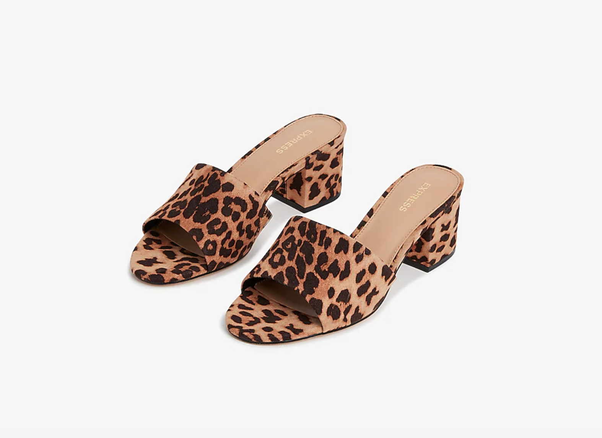
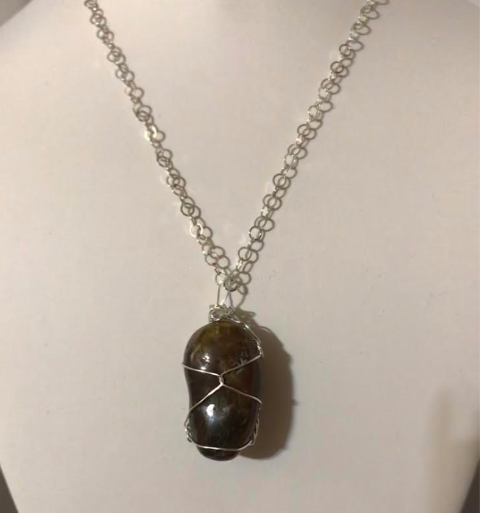
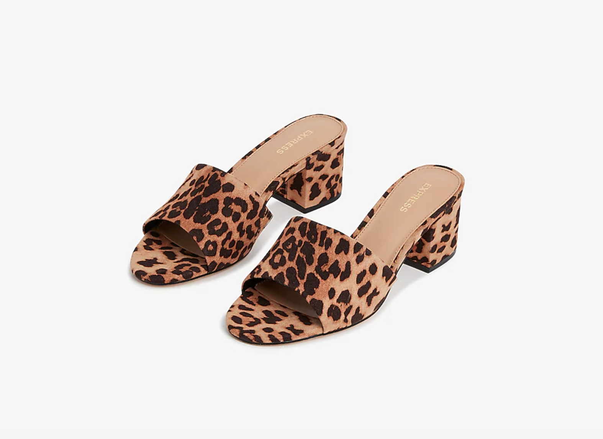
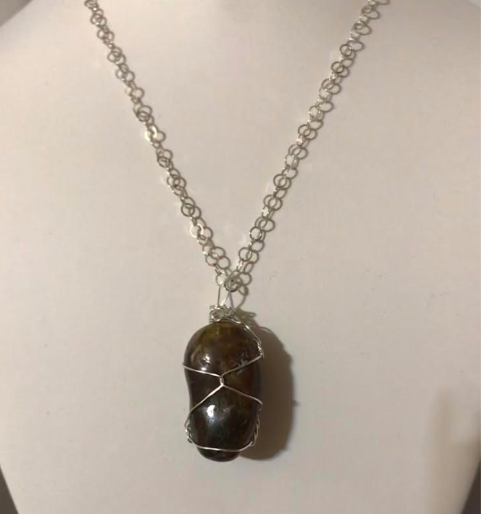

StyleYOU
 



My name is Carrie Cheng and I am currently a junior at Sunny Hills High School. My passion for the fashion industry sprouted as early as 6 years old. Growing up, I've only had an interest in designing clothes, but I never really expanded on it and ventured out to actually create. But, these past few years, my wardrobe and style has transformed and I've been keeping up with the hottest trends. I wanted to create a website to help other highschool and teenage girls with making their morning routines easier by creating outfit ideas and keeping them updated with the latest fashion trends. I am a girl passionate with the way I dress, so I wanted to take this passion and turn it into a useful platform for others.
My name is Lali Botts and I am an eigth grader at Saint Therese Carmilite School. I love fashion and have my very own jewelry business. I started this business because I wanted to be able to go to a college that offered computer science. I also love sports. I play basketball, volleyball, and soccer. When i am not coding or running my business, I am playing sports. I play not only for my school team, but also for a basketball travel team. I wanted to make this website to help girls my age to be able to help make their morning routines much eaiser and keep them updated on the latest trends and incorporate my business as well.